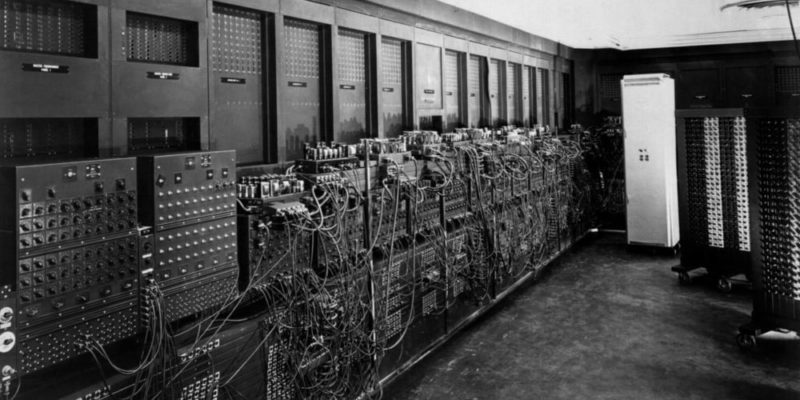
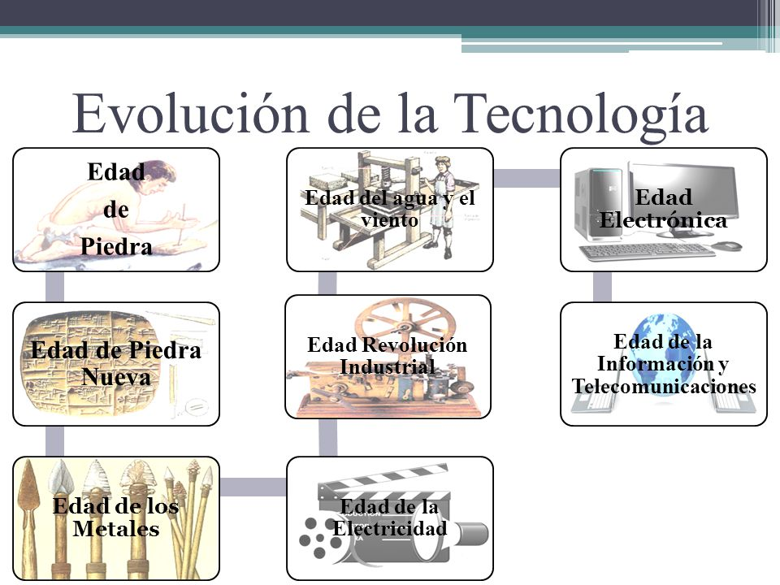

Que es la Tecnologia

La tecnología es la aplicación de la ciencia a la resolución de problemas concretos. Constituye un conjunto de conocimientos científicamente ordenados, que permiten diseñar y crear bienes o servicios que facilitan la adaptación al medio ambiente, así como la satisfacción de las necesidades individuales esenciales y las aspiraciones de la humanidad.
Primer computador

La primera generación de computadoras abarca desde el año 1940 hasta el año 1952, aunque realmente estas fechas son de las máquinas comerciales que se podrían llamar la primera generación de computadoras. Características: Estaban construidas con electrónica de válvulas de vacío. Se programaban en lenguaje máquina.1 Un programa es un conjunto de instrucciones para que la máquina efectúe alguna tarea, y el lenguaje más simple en el que puede especificarse, el programa se llama lenguaje de máquina porque el programa debe escribirse mediante algún conjunto de códigos binarios. La primera generación de computadoras y sus antecesores, se describen en la siguiente lista de los principales modelos de que constó: 1938 el Z1 primera máquina totalmente electro-mecánica, los componentes mecánicos daban bastantes problemas. Las Z fueron fabricadas por el alemán Konrad Zuse, cuyo trabajo fue menospreciado por haberse producido en Alemania durante la Segunda Guerra Mundial.2 1939 el Z2, para mejorar usó por primera vez relés, fue una máquina intermedia entre la Z1 y la Z3. 1941 el Z3, primera máquina completamente operativa usando relés. 1944 ENIAC. Considerada hasta hace unos años como la primera computadora digital electrónica en la historia.3 No fue un modelo de producción, sino una máquina experimental. Tampoco era programable en el sentido actual. Se trataba de un enorme aparato que ocupaba todo un sótano en la universidad. Construida con 18.000 tubos de vacío, consumía varios kW de potencia eléctrica y pesaba 30 toneladas. Era capaz de efectuar cinco mil sumas por segundo. Fue hecha por un equipo de ingenieros y científicos encabezados por los doctores John W. Mauchly y J. Presper Eckert en la universidad de Pensilvania, en los Estados Unidos. 1945 el Z4 fue completado, rediseñado completamente tras perderse los planos y piezas de las anteriores Z durante los bombardeos aliados de Berlín. Fue la primera máquina en ser vendida comercialmente en 1950. 1949 EDVAC. Segunda computadora programable. También fue un prototipo de laboratorio, pero ya incluía en su diseño las ideas centrales que conforman las computadoras actuales.
Inicios de la tecnologia

La historia de la tecnología es la historia de la invención de herramientas y técnicas con un propósito práctico. La historia moderna está relacionada íntimamente con la historia de la ciencia, pues el número del descubrimiento de nuevos conocimientos ha permitido crear nuevas cosas y, recíprocamente, se han podido realizar nuevos descubrimientos científicos gracias al desarrollo de nuevas tecnologías, que han extendido las posibilidades de experimentación y adquisición del conocimiento. Los artefactos tecnológicos son productos de una economía, una fuerza del crecimiento económico y una buena parte de la vida. Las innovaciones tecnológicas afectan y están afectadas por las tradiciones culturales de la sociedad. También son un medio de obtener poder militar.